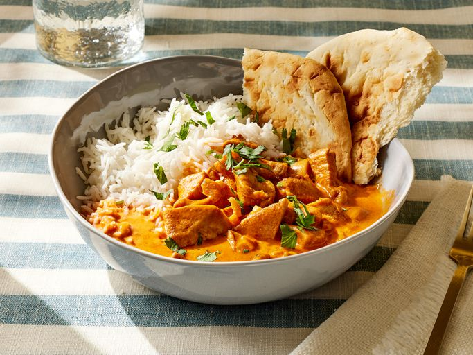

Home
Butter Chicken Recipe

Description
Butter Chicken (Murgh Makhani) is one of the most popular curries in the world and yet happens to be one of the easiest. Nowadays, it is usually hard to find enough ingredients for most dishes. Butter Chicken is one of the few exceptions. You can
easily get all the ingredients from any supermarket.
Ingredients
- Plain yoghurt
- Lemon Juice
- Tumeric Powder
- Garam Masala
- Chilli Powder
- Ground Cumin
- Freshly Grated Ginger
- Cloves Garlic
- Chicken Thigh
- Ghee or Butter
- Tomato Passata
- Heavy/Thickend Cream
- Sugar
- Salt
Instructions
- Optional Blitz: For an extra smooth sauce, combine Marinade ingredients in a food processor and blend until smooth
- Marinade: Combine Marinade ingredients with chicken in a bowl. Cover and refrigerate overnight, or up to 24 hours (min 3 hours)
- Cook Chicken: Heat the ghee over high heat in a large fry pan. Take the chicken out of the Marinade but do not wipe or shake off the marinade from the chicken
- Place chicken in fry pan and cook for 3 minutes, or until the chicken is white all over
- Add tomato passata, cream, sugar, salt, and any marinade left in the bowl. Turn down to low and simmer for 20 minutes.
- Garnish with coriander/cilantro leaves if using.